바로한방병원의 고주파 온열 치료는 정상세포에 영향을 끼치지 않으면서 암세포만을
추적하여 자연사 시키는 효과적인 치료법입니다.
암세포의 특성을 파악하고 암세포에 열 에너지를 가해 암세포의 증식을 억제합니다.
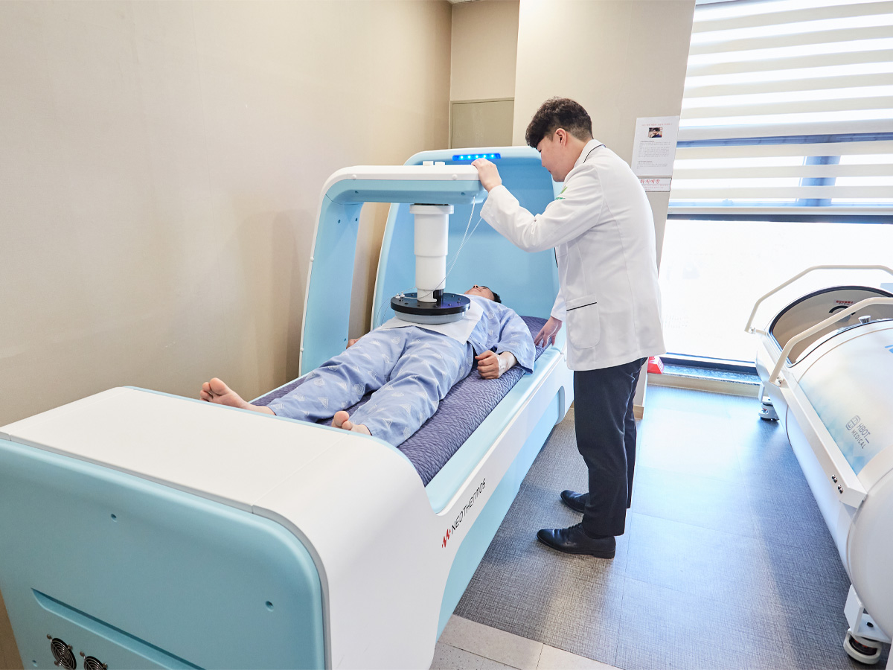
<고주파온열치료의 모습>
고주파온열치료의 장점
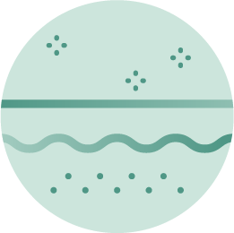
비침습척 항암치료
고주파온열치료는 체외에서 고주파를 이용하여 암세포만을 치료할 수 있어 치료 중 통증이나 불편함이 거의 없습니다.
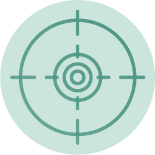
암세포만을 추적하는 치료
13.56Mhz의 고주파를 이용하여 암세포의 특성을 따라 흘러 암세포를 자연사 시키기 때문에 정상 세포에는 악영향을 주지 않습니다.
항암치료 및 수술과 병행
항암 치료와 방사선 치료를 병행하는 경우 그 효과가 두 배 가량 상승 된다는 연구결과가 있습니다.
부작용의 최소화
부작용과 합병증이 없어 치료 전후의 기력저하가 거의 없습니다. 환자는 치료중 약간의 따뜻함을 느낄 뿐입니다.
면역력과 기력의 강화
혈액순환과 신진대사를 활성화하여 통증을 개선하고, 면역력과 기력을 회복하여 환자의 삶의 질을 개선시킵니다.
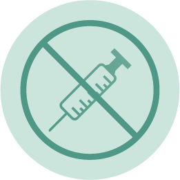
무독성 무자극 치료
치료에 불필요한 약물 없이 단독치료를 수행할 수 있어 말기암 함자 등 여러 항암 치료가 어려운 경우에도 치료가 가능합니다.
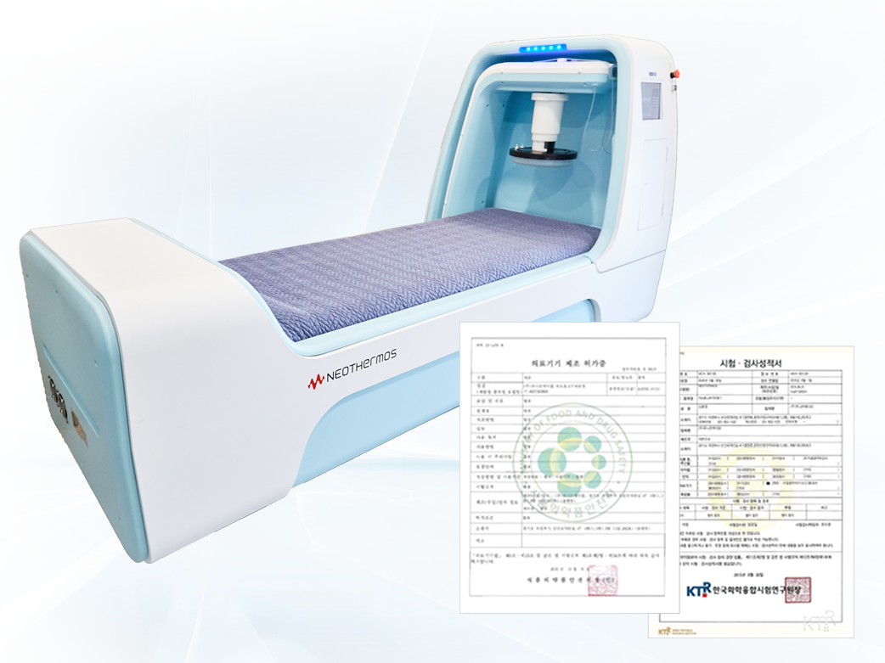
식악처 허가 의료용 치료기기
바로한방병원은 식품의약품안전처의 허가를 받아 믿고 치료할 수 있는 네오써모스(NEO THERMOS) 기기를 사용합니다.
네오써모스는 체내 온도 추정 기능이 탑재되어 정상세포가 아닌 암세포만을 추적할 수 있으며, 암세포에는 13.56Mhz 600W 고주파 RF Generator의 열을 가하여 암세포를 죽이고 증식을 억제합니다.
고주파온열치료 적용 가능한 암종
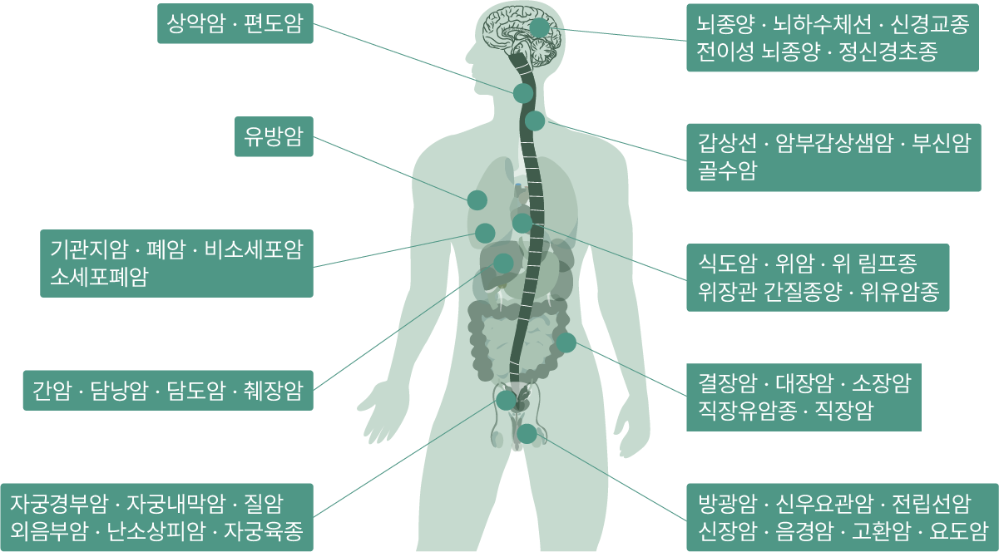
바로한방병원의 암 면역 주사
암 면역 주사 치료는 암 환자의 면역 체계를 강화하고 암 세포를 공격하는 치료법으로 환자의 면역 체계를 자극하여 암 세포를 탐지하고 파괴하는 능력을 강화시킵니다.
이러한 치료법은 종양의 종류, 스테이지, 환자의 건강 상태 등에 따라 다양한 방식으로 적용될 수 있습니다. 면역 주사 치료는 다른 치료법과 함께 사용되며, 예를 들어 화학 요법, 방사선 치료 등과 함께 사용될 수 있습니다. 이러한 조합 치료는 종종 암 치료의 효과를 향상시킬 수 있습니다.
싸이모신알파1 Thymosin Alpha1
암 발생률을 좌우하는 NK세포 활성도
NK세포(Natural Killer Cell)는 체내에서 1차적인 방어작용을 담당하는 면역세포입니다. NK세포는 암세포나 바이러스 감염세포 등의 비정상 세포를 감지하고 즉각적으로 제거합니다.
면역이 저하된 암 환자의 경우 싸이모신 알파1 등의 주사치료를 통해 T세포와 NK세포, 수지상세포 등 다양한 면역세포를 활성화해 면역 기능을 끌어올릴 수 있습니다.
싸이모신알파1은 체내 흉선에 존재하는 면역조절 펩타이드로, 면역계 T세포, NK세포, 수지상세포 등 면역계의 다양한 세포를 활성화해 면역 반응이 저해된 상황에서 면역 기능을 향상시키는 역할을 합니다.
싸이모신알파1은 특히 독성이 현저히 적어 항암치료의 효율을 극대화시켜주고 생존을 증가시켜주므로 거부감이 적고 삶의 질을 높여줄 수 있습니다.
면역 세포 수와 활동성 증가
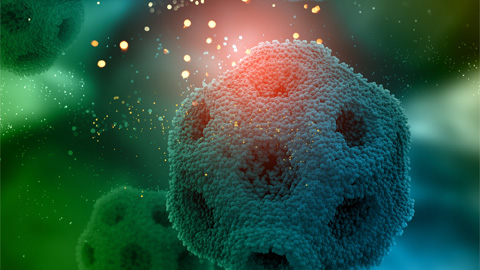
감염 및 염증성 질환 면역 강화
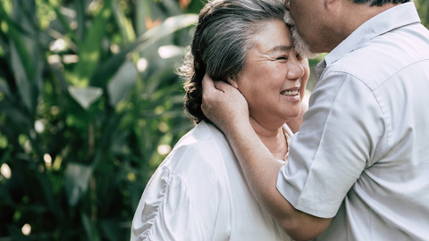
항암 부작용 최소화
미슬토 주사Mistletoe
100년 동안 검증된 유효성과 안전성
미슬토(mistletoe)는 여러 종류의 숙주나무(전나무, 사과나무, 떡갈나무, 소나무, 서양 물푸레나무)에 반기생하는 식물로, 1920년부터 종양 치료 약물로써 추천되었습니다.
미슬토주사 치료는 수술 전과 수술 후 모두 효과적이며, 수술 전 미슬토 치료는 수술에 의해 발생할 수 있는 부작용을 줄일 수 있으며, 수술이 끝난 후에도 면역 활성화를 통한 삶의 질 향상 및 재발을 예방하는데 도움을 줍니다.
방사선치료나 항암화학요법과 병행하면 식욕부진, 불면증, 무기력증, 근육통 등과 같은 부작용을 최소화할 수 있으 항암 치료의 효과를 극대화시킬 수 있습니다.
세포독성효과
면역조절작용
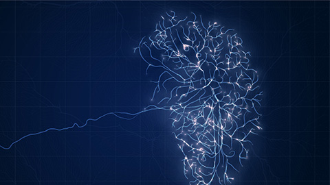
베타 엔돌핀의 분비
고농도비타민CHigh-dose Vitamin C
강력한 항산화와 암치료의 효과 증진
고용량의 비타민C는 혈관으로 투여되어 항암제가 암세포 내로 들어가는 것을 도와줍니다. 따라서 항암 치료의 효율을 증대하고, 단독 투여만으로도 암 환자의 생존기간을 늘리고 통증을 완화시켜 줍니다.
특히 비타민C는 구강, 식도, 위 대장, 폐암, 유방암 등에서 예방효과가 뛰어납니다.
항암치료 시 고농도비타민C 치료를 병행하면 오심, 구토, 백혈구 수치 저하, 손발 저림, 피로 등의 대표적인 부작용을 호전시키는데 효과적이며, 말기 암 환자의 통증을 완화하여 삶의 질을 상승시킵니다.
고용량 비타민C는 치료 효과를 극대화하기 위해 암종별 주당 치료 횟수, 치료의 타이밍, 치료 용량이 달라집니다. 바로한방병원은 환자별 상태에 따라 용량과 횟수를 유기적으로 조절하여 효과적인 암치료를 도와드립니다.
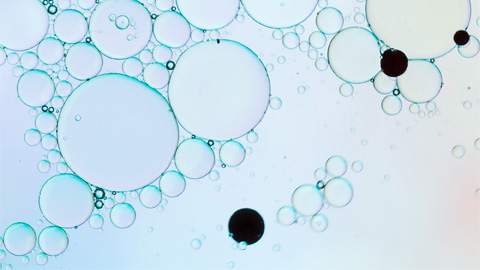
과산화수소수(H₂O₂) 생성
비타민C가 체내에서 산화되며 생성 된 과산화수소수는 암세포 괴사를 유발합니다.
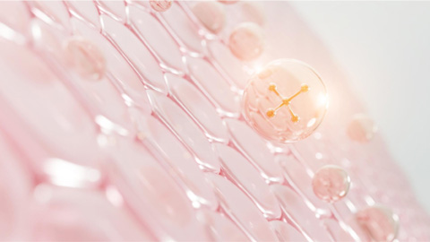
콜라겐 합성
콜라겐 합성을 활성화하여 정상세포 간의 해리를 막아 암세포의 전이를 막습니다.
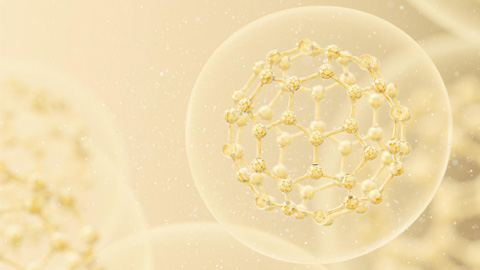
면역 기능 증강
비타민C는 체내에서 면역 글로불린 합성과 림프구의 활성을 촉진합니다.
수액요법Fluid Therapy
항암 치료 환자의 종합 면역 관리 시스템
바로한방병원에서는 항암 치료와 방사선 치료 중인 환자들을 대상으로 부작용 완화, 기력 증진, 통증 완화, 면역 강화 등을 치료 목표로 다양한 수액 요법을 적용합니다.
셀레늄, 글루타치온, 티옥트산 등 다양한 항산화 주사요법으로 암 환자의 면역을 개선합니다. 항산화 주사는 우리 몸의 활성산소를 억제하고 백혈구 생성을 활성화하는데 효과적입니다. 또한 말초신경병증의 통증 완화에와 항암 부작용과 후유증을 줄이는데 도움을 줍니다.
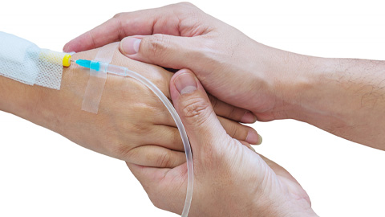
영양수액
항암 치료 과정에서 발생하는 식욕저하, 기력저하 등의 일반적인 부작용 및 후유증에 대한 보조 치료로써 영양 공급의 일환으로 필수 아미노산을 수액으로 공급합니다.
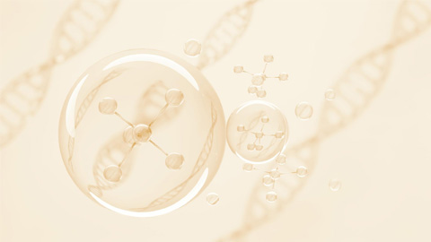
셀레늄
셀레늄은 체내에 존재하여 활성산소를 제거하고 항산화 물질의 작용을 돕습니다. 또한 항염작용과 갑상선 호르몬 활성화 등의 작용을 돕는 필수 미량원소입니다.
셀레늄은 면역항암제로써 항암 및 방사선치료 시 정상세포를 보호하고, 암세포의 괴사율을 높여 치료의 효과를 극대화시켜줍니다. 그리고 항암제 치료의 부작용을 경감시켜 항암제에 대한 내성을 감소시킵니다.
암세포의 성장 또한 억제시키는 것으로 확인되었습니다.
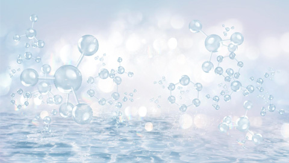
글루타치온
글루타치온은 일반적으로 항산화 효과가 뛰어나 면역력을 지원하고 피로회복 개선과 간 기능에 도움을 주며 피부 미백에도 뛰어난 것으로 알려져 있습니다.
바로한방병원은 글루타치온이 손상된 DNA를 회복하는 점에 주목하여 항암 치료 전후의 환자에게 항암 치료 주사 요법으로 권장드리고 있으며, 면역 세포에서 면역 기능을 극대화시키고, 독성 물질을 중화시켜 담즙으로의 배출을 유도합니다.
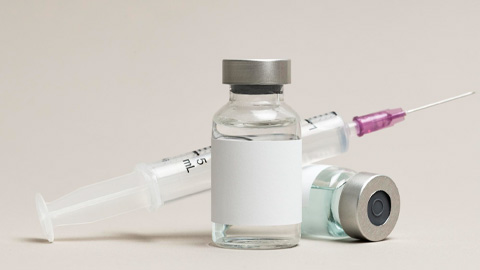
티옥트산
티옥트산은 체내에 존재하는 지방산의 종류로 체내의 해로운 활성산소를 없애주는 강력한 항산화제입니다. 또한 다른 많은 항산화 효소를 돕는 보조인자로서 작용합니다.
항암 치료과정에서의 부작용과 통증을 완화하여 삶의 질과 치료과정의 거부감을 개선하는데 도움을 줍니다.
바로한방병원 림프 부종 관리 프로그램
림프부종이란? 림프관이 손상되어 간질내에 단백질 성분이 함유된 수분이 축적됨으로써 팔이나 다리에 부종과 만성 염증이 생기는 질환입니다. 림프부종은 발생 원인에 따라 선천성, 조발성, 속발성으로 구분되나 유방암, 갑상선 암 등 내분비 계에 발생하는 암종을 투병한 이후 주로 발생되는 부작용입니다.
림프부종의 대표적인 증상은 대개 통증 없이 사지가 천천히 점진적으로 부어오릅니다. 또한 림프부종의 위험이 있는 부위에 열이 나거나 붉게 변하고 통증이 발생한다면 림프 내의 염증을 의심해 볼 수 있습니다.
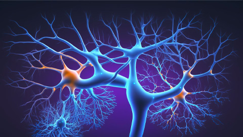
림프 부종 발생의 원인
01
림프관의 손상
방사선 치료나 항암 수술 등으로 인해 림프관이 손상되어 림프액의 축척에 의한 부종 발생
02
면역계의 손상
오랜 항암 치료로 인해 면역계가 손상되면 감염에 노출되어 림프절의 염증이 발생할 수 있습니다.
03
암종과 종양의 크기
유방암, 림프종은 림프 부종 발생이 잦은 암종이고, 그 밖에도 종양의 크기에 따라 림프절 압박에 의해 부종이 발생합니다.
04
암 전이에 의한 발생
종양의 전이가 림프절 근처에서 발생하면 해당 림프절에서 암세포가 축적되어 부종이 발생할 수 있습니다.
도수 림프 배출(Manual Lymph Drainage, MLD)
바로한방병원에서는 항암 치료 전후의 환자가 겪는 림프부종을 해소하기 위해 도수림프배출(MLD) 치료법을 권장하고 있습니다.
도수 림프마사지 치료는 부종환자들에게 가장 효과적인 치료법으로 알려져 있으며, 림프절에 정체되어 있는 림프액을 잔여 림프관을 통해 이동할 수 있도록 부드러운 마사지를 통해 순환을 유도합니다.
바로한방병원는 숙련된 전문 물리치료사가 직접 도수 림프 마사지를 시행하고 있어 안심하고 1:1 맞춤 관리를 받으실 수 있습니다.